This web page provides numerical solutions of steady advection-diffusion around the unit disk (Fig. 1 a):
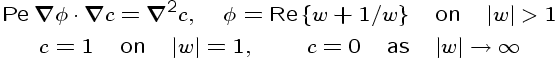
The system is conformally invariant, thus the solution for any arbitrary geometry (Fig. 1 b-c) can be mapped from this canonical solution. The Peclet number Pe is the speed of the background flow far away and the solution c depends on Pe as well as the spacial coordinate.
A quantitiy of interest is the normal flux on the boundary of the disk which causes growth in the quasi-linear system:
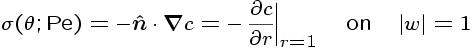
For stochastic growth, the probability measure is proportional to the flux with normalization by Nussel number Nu(Pe):
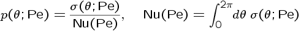
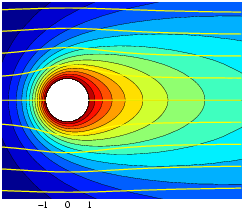
(b)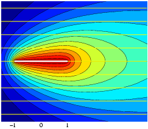
(c)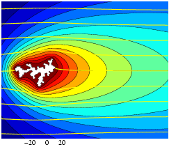
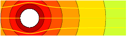
(b)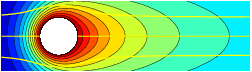
(c)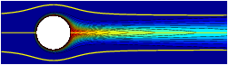
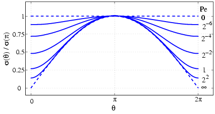
(b)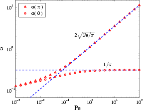
.mat not included ) ConcSpectral.m 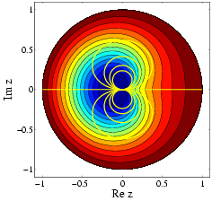
(b)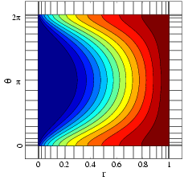
ConcAdpmesh.m AdpmeshR.m and AdpmeshTH.m, which generate the adeptive mesh, are used in this function.
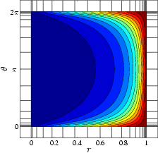
(b)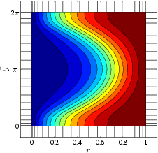
FluxAsymH.m expbesselk.m and
experfc.m
FluxAsymL.m Nussel.m FluxAsymH.m and FluxAsymL.m.
RefSoln.mat r, th : the spectral grid points for r and θ
Nr, Nth : the number of grid ponts used as the arguments for ConcSpectral.m
PeI : the reference values of Pe
SigI : σ(θ, Pe)
NuI : Nu(Pe)
HI : h(r, θ; Pe). c is not stored since it can be obtained from h.
cdfI, thI : The inverse cumulative distribution function of p(θ; Pe). E.g. thI(cdfI==0, PeI) = 0, thI(cdfI==1, PeI) = 2&pi
RefSoln.m : Generates RefSoln.mat
GetRefSoln.m : Return the concentration c based on the interpolation of h in RefSoln.mat.
mycheb.m and myclencurt.m : numerical differentiation and integration. Modified from the original codes (cheb.m and clencurt.m) in Spectral Methods by Trefethen
repop.m :
DrawCircleOut.m : Fig. 1 (a)
DrawStrip.m : Fig. 1 (b)
DrawCircleIn.m : Fig. 4 (a)
DrawPolar.m : Fig. 4 (b)
FluxAsymH.m or FluxAsymL.m are exact and fast. ConcSpectral.m or ConcSpectral.m requires solving a very large linear system of equations. The ranges of Pe suitable for the functions are as follows:
FluxAsymL.m
FluxAsymH.m
FluxAsymL.m is very accurate although it's only the leading order. FluxAsymH.m is also good below Pe = 0.001, but more and more terms are required.
Nussel.m gives Nu(Pe) using the above criteria.
ConcAdpmesh.m rather than ConcSpectral.m when Pe is very low or high;
ConcSpectral.m
ConcAdpmesh.m
GetRefSoln.m. It's very fast since it fetchs and interpolates the stored solutions.
If you need more accurate solutions, you can calculate solutions for more dense values of Pe and more grid points (Nr and Nth) in advance and save to RefSoln.mat. You can also use ConcAdpmesh.m for low and high Pe, but be aware that, in that case, the grid points r and th are different for each Pe. So you'll have to write a new GetRefSoln.m with a more sophiscated interpolation algorithm. I didn't try that.
jaehyuk _@_ eml.cc
dio _@_ math.mit.edu
tsquires _@_ acm.caltech.edu
bazant _@_ math.mit.edu